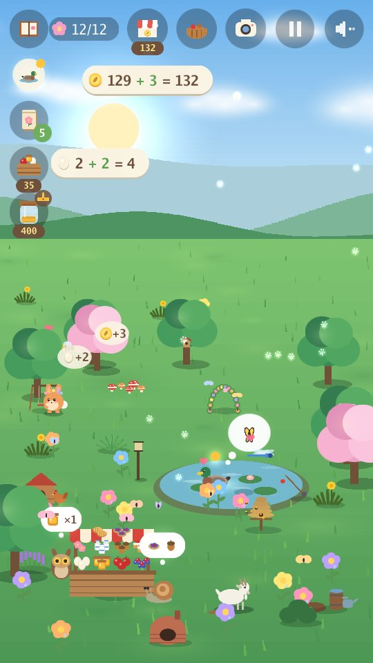
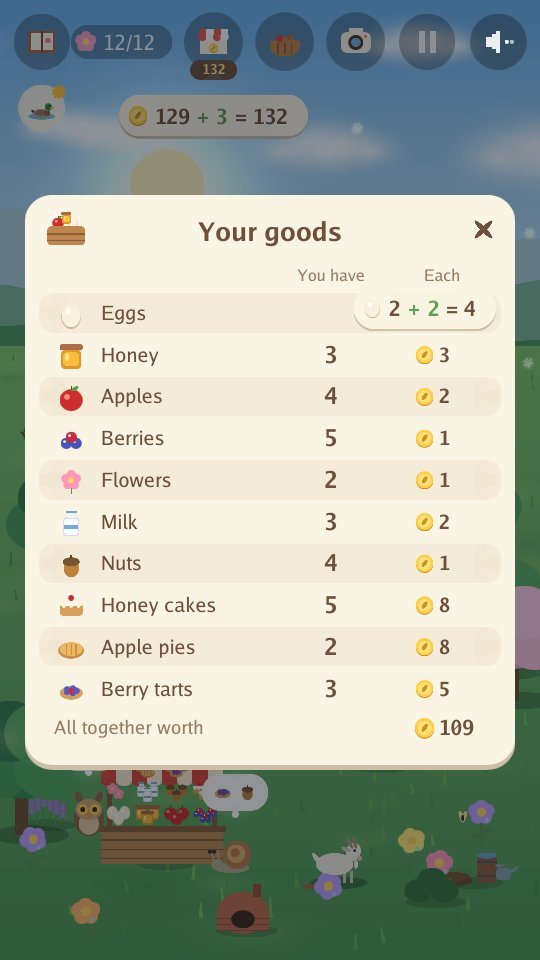
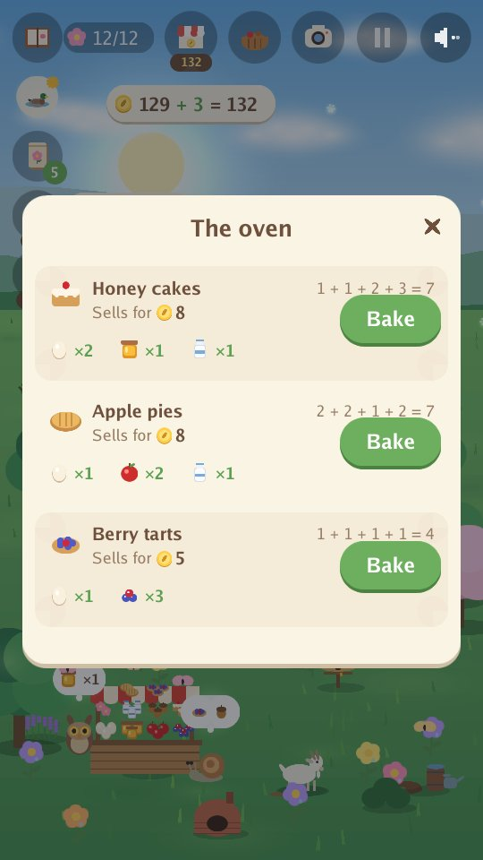
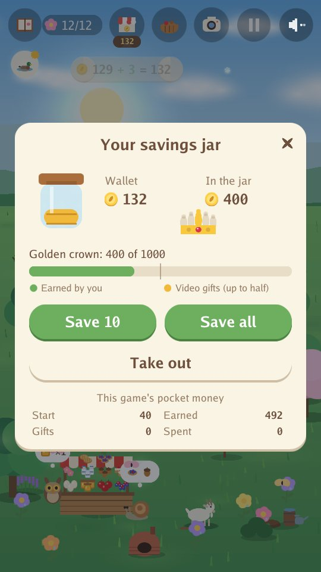

Arnoob Land
A calm nature game for children

A quiet garden needs your help. A little bunny wants to make it a home again, one seed at a time. Plant flowers, build a pond, set out treats and watch who comes to visit. Every season brings new animal friends: bees and ducks in spring, turtles and hummingbirds in summer, foxes and badgers in autumn, snowy owls and otters in winter.
- Calm and gentle: no timers, no score to lose, nothing to fail.
- Only nature sounds: wind, water, rain, birds and animal calls. No music.
- Four seasons and 80 animals to befriend, with golden animals and rare moments to discover.
- Watch the moon: night after night it changes from new moon to full moon and back, and owls love full-moon nights.
- Take photos of your animal friends for your album: every photo earns a coin.
- Learn to care for friends: notice what each animal needs and build it a home (a pond, a log pile, a berry bush...) so new friends come sooner, grant their wishes, help two friends play together, give a friend a flower, and watch friendships grow.
- Run a little farm: feed the hens, keep bees and a goat, pick apples, berries and flowers, and sell them at your busy market stall to the friends who come to buy. Things you bought sell back for half their price, but not the pond, plants, seeds or trees.
- Be a garden helper: pull weeds, rake leaves and clear snow for the compost heap, which brings an extra harvest and a faster farm, and water the flowers and fruit trees. Every job done raises your Garden helper level.
- Bake and fill orders: turn eggs, milk, honey, apples and berries into cakes, pies, tarts and jam that sell for more, and add up the bill when a friend brings a little order.
- Count as you play: every egg collected or sold, and every coin earned or spent, shows as a simple sum, like 3 + 2 = 5.
- Learn to save: put coins in your savings jar, watch it grow a little each day, and save up for the golden crown.
- Build the golden crown piece by piece: saving fills it with gold, and friends bring its three gems.
- A calm game in every season: fishing (the fish swim free again), gathering fireflies (they fly free), the autumn harvest of nuts and apples, and building a snow fort.
- Hide-and-seek with friends: from your fifth friend, friends hide around the garden and play together, and once you have found them all, golden friends visit more often.
- Eight languages: English, Arabic, Chinese (Simplified), French, German, Japanese, Russian and Spanish. The game starts in your phone's language (English for any other), and the globe on the title screen changes it. The game was written in English; the other seven languages were translated with the help of AI.
- A long, gentle journey: play the whole year over many days, or a shorter game in one season. Your garden is saved as you go.
- A dream garden, if you like: save for a swing, a little bridge, a fountain, a treehouse and more. Your friends use them, and four secret friends may come to see them.
In the garden




For parents
No accounts, no chat and no purchases. Videos play only when the player chooses to watch one, for a small in-game gift: a basket of goods to sell, a few coins, a surprise for the garden, seeds or treats.
Privacy Policy app-ads.txt